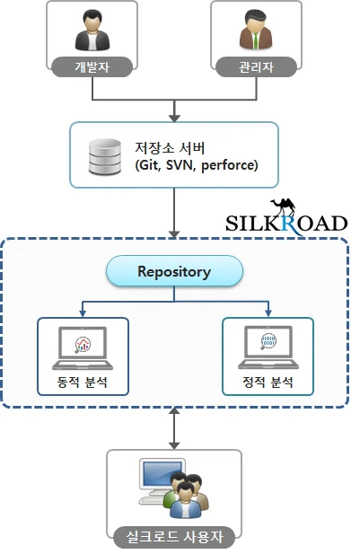
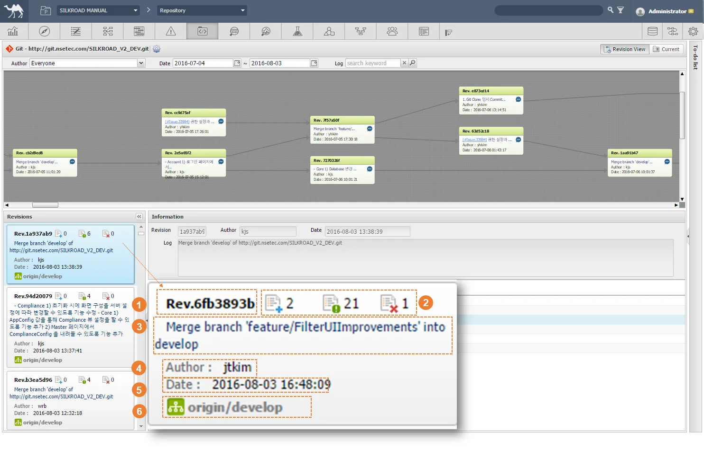
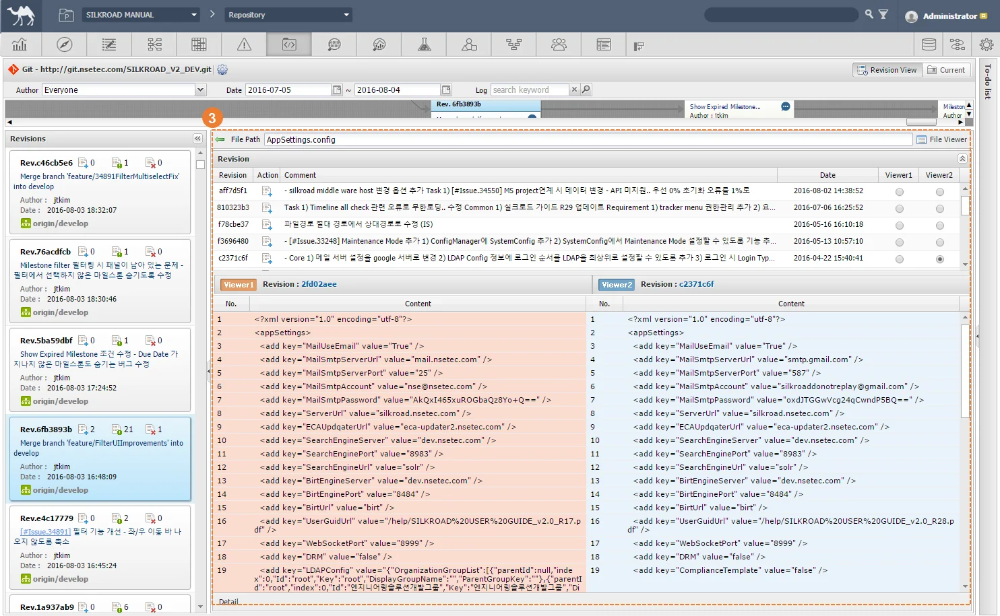
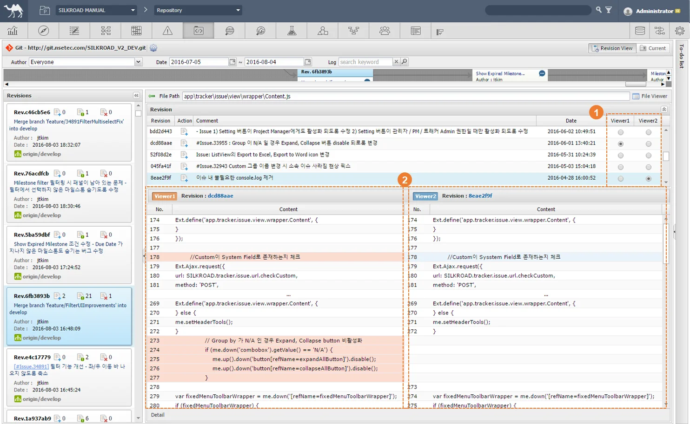
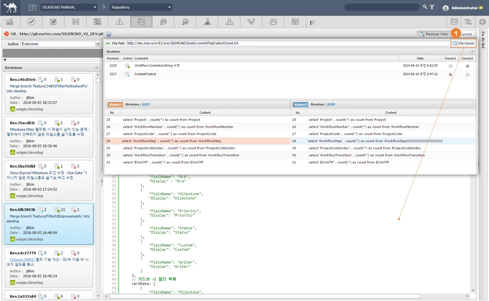
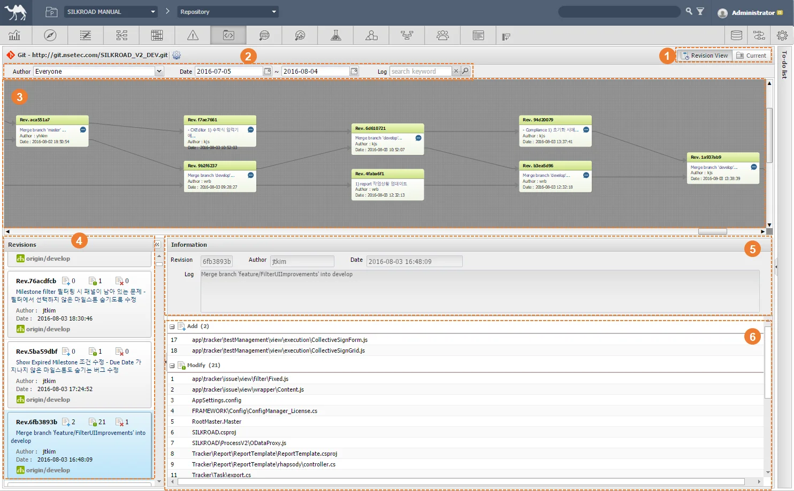
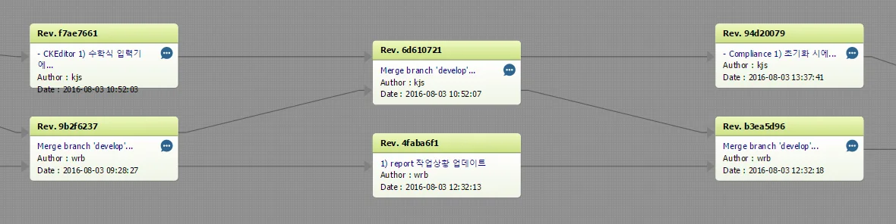

|
SILKROAD 소스관리시스템(Source Management)은 Git, SVN, Perforce 등 도구와 연동하여 web에서 산출물을 열람 및 관리할 수 있는 기능을 제공한다. 소스코드의 변경이력 관리가 가능하며 소스코드 리비전 조회가 용이하다. 연동된 소스 리비전 데이터는 SILKROAD 테스트 관리 모듈, 형상관리 모듈 등 다른 모듈과의 추적성 연결이 가능하다.
 |
|
Index | Name | Description |
| GIT, SVN, Perforce 선택 | 연결할 소스코드 형상관리 도구 선택 |
| Settings | 선택한 프로그램 Type, Repository Path, ID, Password 설정 창 |
| View | Revision View(리비전 뷰 - 변경 이력 관리), Current View(커렌트 뷰 - 현재 개발 모습) |
| Revision 다이어그램 | GIT 연계시 제공 |
| Revision 목록 | 다이어그램에 그려진 이력들과 1:1로 매칭 되는 목록 (추가된 파일, 수정된 파일, |
| Revision 이력 | 변경 이력 내용 목록화(더블 클릭 시 변경 이력 비교 창으로 이동). 추가, 수정, 삭제 범주로 분류 출력 |
① '' 버튼을 클릭해 Setting 창을 생성한다.
② Repository 유형을 선택한다.
- Git, SVN, Perforce중 하나를 선택한다.
③ Repository Path 경로 설정한다.
④ Repository Path 접속 아이디를 입력한다.
⑤ Repository Path 접속 비밀번호를 입력한다.
|
 |
Index | Name | Description |
| Revision ID | 변경 사항에 부여되는 ID |
| 변경 상황 | 추가, 수정, 삭제 된 코드 개수 표시 |
| Commit Message | 변경 시 Author(작성자)가 남긴 메시지 |
| Author | 작성자 ID |
| Date | 변경 일 |
| Origin/develop | 원격 개발 Branch |
① 변경 목록에서 열람할 카드를 선택하여 마우스 더블 클릭한다.
- 현재 변경 이력을 추가, 수정, 삭제 범주로 표시한다.
② 변경 이력을 비교하거나 상세 내역을 보고 싶은 대상을 마우스 더블클릭한다.
|
③ 상세 변경 이력이 상단에 나타나며 하단엔 버전 비교가 가능한 뷰어가 제공된다.
 |
① 상단 목록에서 비교를 원하는 두 개의 다른 대상을 선택한다.
② 선택 된 두 개의 다른 변경 이력이 다음과 같이 비교된다.
 |
① 'File Viewer' 버튼을 클릭하여 소스파일을 열람한다.
- 열람 기능만 존재하며 편집은 지원하지 않는다.
 |
① 'Current' 탭을 클릭하여 최신 소스파일을 열람한다.
- 왼쪽 목록에서 선택한 소스파일이 오른쪽 뷰어에서 출력된다.
|
 |
Index | Name | Description |
| 뷰어 탭 | ‘Revision’ 과 ‘Current’ 탭 |
| 필터 | Author, Date, Log 기준 검색 |
| 변경 이력 브랜치 뷰어 | 변경 이력간의 Branch 다이어그램 |
| 변경사항 목록 | GIT으로 개발된 소스코드 파일에 나타난 변경점 자동 등록 |
| 변경 사항에 대한 기본 정보 | Revision ID, Author, Date, Log(좌측 변경이력 카드와 비슷한 정보 제공) |
| 변경 내역 | 추가, 수정, 삭제 된 소스파일 이력 표시 |
|
Index | Name | Description |
| Revision ID | 리비전 ID |
| Commit Message | 작성자가 소스코드 수정 시 남기는 메시지 |
| Author | 작성자 ID |
| Date | 변경된 날짜 |
① 변경점에서 또 다른 변경이 발생하면 추적성을 연결해 줍니다.
 |

 삭제된 파일)
삭제된 파일)